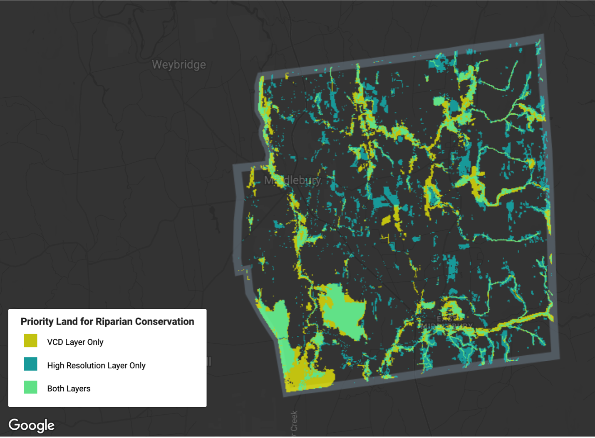
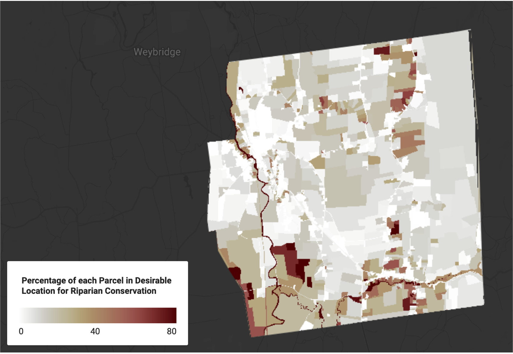

Introduction
Through the Flood Resilient Communities Fund (FRCF), the Vermont legislature has allocated $14,750,000 of American Rescue Plan Act funds for projects that reduce flood risk and promote community resilience for the fiscal year 2023 (VT DEC Watershed Management Division & VT Emergency Management, 2022). Focused on “buyouts of flood-vulnerable properties,” this funding presents communities throughout Vermont, including the Town of Middlebury, with an opportunity to mitigate local flood hazards by purchasing parcels that are particularly prone to flooding or valuable for floodwater storage (VT DEC Watershed Management Division & VT Emergency Management, 2022).
Furthermore, by evaluating the overlap between flood-prone areas and priority conservation targets, communities may be able to realize conservation co-benefits by prioritizing purchasing parcels that are both at risk of flooding and home to wildlife habitats. In this analysis, I present one methodology for identifying priority parcels in Middlebury for buyout under FRCF, and I investigate the sensitivity of this methodology to the choice of input layers.
Background
Vermont Conservation Design (VCD) is a governmental initiative that takes a “rigorous, science-based” approach to conservation efforts (Sorenson & Zaino, 2018). By developing statewide datasets of forest blocks, riparian areas, natural communities, wetlands, and more, VCD provides the data required to conduct informed and targeted conservation efforts (Sorenson & Zaino, 2018). Furthermore, through the online BioFinder mapping interface, the Vermont Agency of Natural Resources (ANR) provides ordinary citizens with the opportunity to explore these datasets (Creating BioFinder and Vermont Conservation Design, n.d.).
Two layers that are made publicly available through VCD are a “Surface Water and Riparian Areas - Highest Priority” layer, which includes all aquatic habitats in Vermont and the valley bottoms typically affected by flooding, and a “Riparian Wildlife Connectivity” layer, which includes riparian areas and habitat corridors for riparian wildlife (VT ANR Biofinder/VCD Team, 2019). The intersection of these two layers would provide us with the locations that are both flood-prone and important for riparian wildlife, which are precisely the conditions that we seek for identifying parcels for buyout under FRCF.
Unfortunately, the VCD layers have a relatively coarse spatial resolution. As evidence of this, please see the figure on the following page, which shows a close-up look at the “Riparian Wildlife Connectivity” layer (Figure 1). Notice the pixelation and how parts of Otter Creek fail to be included in the layer; in reality, riparian wildlife certainly use the entire creek. While VCD’s layers provide valuable information at scale, datasets of finer spatial resolution may provide more reliable information when developing buy-out recommendations.
According to Avelino et al., high resolution imagery can capture more detail but it can also introduce more noise, so the choice of spatial resolution should be specific to one’s use of the imagery (Avelino et al., 2016). In this analysis, I develop a higher resolution alternative to VCD’s layers, using a number of high-resolution layers introduced to us by Professor Howarth. To both layers, I apply a methodology for identifying properties for buy-out – calculating the percentage of each parcel in a desirable location for riparian conservation – in the hopes that I might determine which resolution is preferable for our purposes.
Methods
First, I identified locations that are both at risk of flooding and valuable for conservation efforts according to VCD by taking the intersection of VCD’s “Surface Water and Riparian Areas - Highest Priority” and “Riparian Wildlife Connectivity” layers.
To create a higher resolution alternative to this layer, I first created higher resolution alternatives to the two input layers. Specifically, as a replacement for VCD’s surface waters layer, I took the union of the ANR river corridors and small stream setbacks, Addison County’s wetlands, and Middlebury’s FEMA flood hazard areas. As an alternative to VCD’s riparian wildlife connectivity layer, I took the union of all water and tree cover landcover in Middlebury. Many thanks to Professor Howarth for putting together several of these layers in Earth Engine. Finally, I took the intersection of these two layers to serve as a higher resolution alternative to the intersection of the two VCD layers. The figure below illustrates the similarities and differences between the two layers (Figure 2). Notably, the VCD layer is far more pixelated and tends to include wider buffers around Otter Creek, Middlebury River, and the Muddy Branch, while the high-resolution alternative includes more wetlands and flood-prone regions not directly adjacent to rivers.

Next, I used a reducer to calculate the area of each of the two layers within each parcel in Middlebury. I used this statistic to calculate the percentage of each parcel’s area that is overlapped by the two different layers. All of that analysis is available in this script.
Finally, I created a new script to produce the figures for my discussion. Specifically, I created a histogram and a choropleth map of the percentage of each parcel in a favorable location for riparian conservation for both the VCD layer and the high-resolution alternative. I also set a cut-off threshold of 80% and used that to generate an agreement and disagreement map of which parcels ought to be prioritized for buy-out under the two methodologies. This visualization script is available here, and the resulting figures are included below.
Discussion
Although Figure 2 illustrates that the two methodologies for identifying priority lands for buy-out lead to substantially different layers, when we aggregate these layers to the parcel level, we find surprisingly similar results. To begin, let us evaluate the distribution of the percent area in each case.
Clearly, the distribution of parcels is fairly similar for the two methodologies. In both cases, the histogram is skewed right, with the vast majority of parcels having between 0% and 25% of their area in a desirable location for riparian conservation. There appear to be more parcels in the 25-50% category in the high-resolution layer, but fewer parcels in the 50-75% and 75-100% categories (Figures 3 and 4). While there is relatively little variation between the histograms, these graphs reveal nothing about any differences in spatial patterns between the two methodologies. To investigate any spatial differences, I created a choropleth map for each methodology (Figures 5 and 6).

For the most part, these maps reveal similar spatial patterns for the two methodologies. In both maps, parcels in the vicinity of Otter Creek, the Middlebury River, and the Muddy Branch tend to be colored in deeper red, indicating that they are the most valuable parcels for riparian conservation (Figures 5 and 6). This trend is slightly more pronounced in the VCD map, with more parcels colored deep red around the rivers (Figure 5). This makes sense given the tendency of the VCD layer to include wider buffers around the rivers, which we noticed earlier in the comparison map of priority lands for buyout (Figure 2).
However, the higher resolution layer appears to have better captured the actual shape of the Middlebury River (Figure 6), perhaps because smaller pixels better capture the shapes of smaller features (Avelino et al., 2016). Additionally, further away from the rivers, there appears to be more white parcels in the VCD map (Figures 5 and 6). This may occur because the high-resolution layer includes more wetlands and flood-prone areas away from the rivers, as noted in the comparison map earlier (Figure 2).
As one might expect, these tendencies carried over to the classification of parcels for prioritization for buyout. As mentioned in the methodology section, I used a threshold of 80% to indicate whether one should prioritize a parcel for buyout. The choice of threshold was totally arbitrary and should be carefully evaluated if one were to actually use this method to propose the buyout of parcels under the FRCF.
As we expect from the choropleth maps (Figures 5 and 6), both methodologies indicate that several properties in the vicinity of Otter Creek, the Middlebury River, and the Muddy Branch ought to be prioritized for conservation (Figure 7). The VCD methodology includes a few additional parcels in the vicinity of Otter Creek, while the high-resolution methodology better captures the Middlebury River (Figure 7).
Conclusions
Overall, the results for the VCD and high-resolution methodologies were very similar. The high-resolution layer may represent a slight improvement because it better captures the habitat and flood-prone areas that are not situated in the vicinity of rivers. On the other hand, the VCD layer produced largely similar results, using far less computational effort due to the reduced number of pixels, so it may suffice for an analyst concerned about computational speed.
There are a couple of areas of weakness to my analysis that future work ought to address. First of all, the method I used to isolate the parcels in the Town of Middlebury also included any parcels bordering Middlebury. Although I clip these parcels out in the final figures, it would be computationally more efficient not to calculate percent area for these parcels at all. There are also a few cases where a parcel’s percent area is calculated to be slightly more than 100%. At 100.1% or 100.2%, I suspect this occurred because some raster cells were split over the boundary of the parcel, but this would certainly be worthwhile to investigate.
Additionally, while I used several of the layers presented in class, there are others that could provide additional insight, such as the grassland habitat blocks. Future work ought to refine the high-resolution layer to be as comprehensive yet noise-free as possible. Finally, further work should actually make recommendations for parcels to buy-out under FRCF. To make legitimate recommendations, one might use a methodology similar to the one in this report, and then cross-reference the high-priority parcels with information regarding the current land use and ownership of those parcels. Overall, this work provides a solid basis for identifying parcels to buy-out under FRCF, but there is substantial additional work that would be required to actually make those recommendations.
Bibliography
Avelino, A. F. T., Baylis, K., & Honey-Rosés, J. (2016). Goldilocks and the Raster Grid: Selecting Scale when Evaluating Conservation Programs. PLOS ONE, 11(12), e0167945. https://doi.org/10.1371/journal.pone.0167945
Creating BioFinder and Vermont Conservation Design. (n.d.). VT Agency of Natural Resources. Retrieved April 17, 2023, from https://anr.vermont.gov/maps/biofinder/creating-and- design
Sorenson, E., & Zaino, R. (2018). Summary Report for Landscapes, Natural Communities, Habitats, and Species. Vermont Conservation Design. https://anr.vermont.gov/sites/anr/files/maps/biofinder/Vermont%20Conservation%20Desi gn%20-%20Summary%20Report%20-%20February%202018.pdf
VT ANR Biofinder/VCD Team. (2019). BioFinder 3.0 Development Report. https://drive.google.com/file/d/1eiLfinDcBmC4skrvpNl3RVbkdLxSHzfj/view
VT DEC Watershed Management Division & Vermont Emergency Management. (2022). Flood Resilient Communities Fund Program Overview – August 2022. https://vem.vermont.gov/sites/demhs/files/documents/Flood%20Resilient%20Communiti es%20Fund%20Overview_FY23.pdf